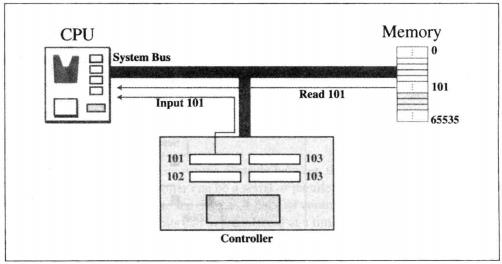

Learning Suggestions
- This section has many key terms, making sure you are familiar with them and understand their operating mechanism.
- Be clear of the three subsystems of hardware and the logical relationships between key terms.
- Use examples and figures to understand how hardware works.
- Do practices to proficient your understanding of the components of hardware.
What is Hardware
Hardware is the physical components of a computer system; they are the basis of computer systems and the basis on which all software programs operate.
The three main subsystems of hardware are: CPU, Main Memory, and Input/Output Subsystems.
CPU
Arithmetic Logic Unit (ALU)
ALU performs two types of operations:
- Arithmetic Operation
- Unary operations: increment and decrement
- Binary operations: add, subtract, multiply, divide (+ - * /)
- Logical Operations
- Logical unary operation: NOT
- Logical binary operation: AND, OR, XOR
Control Unit
The control unit is responsible for selecting one of these operations. Controlling is achieved through wires that can be on (hot) or off (cold).
Registers
Registers are fast stand-alone storage locations that hold data temporarily. Multiple registers are needed to facilitate the operation of the CPU.
- Data Register: Holds intermediate results.
- Instruction Register: Fetches, stores, interprets, and executes instructions.
- Program Counter: Points to the address of the next instruction in memory.
Main Memory
A collection of storage locations, each with a unique identifier—address. Data is transferred to and from memory in groups of bits called words (8/32/64 bits).
Address Space
The total number of uniquely identifiable locations in memory.
Memory Types
- Random Access Memory (RAM): Can be read from and written to by the user. It's volatile: information is erased when powered off.
- Static RAM (SRAM): Uses flip-flop gates to hold data without needing refreshing.
- Dynamic RAM (DRAM): Uses capacitors and needs to be refreshed periodically.
- Read-Only Memory (ROM): Allows reading but not writing. It's non-volatile.
- Programmable Read-Only Memory (PROM): Users can store programs; behaves like ROM and cannot be overwritten.
- Erasable Programmable Read-Only Memory (EPROM): Can be programmed and erased with UV light.
- Electronically Erasable Programmable Read-Only Memory (EEPROM): Can be programmed and erased using electronic impulses.
Memory Hierarchy
Cache memory contains a copy of a portion of main memory.
Input/Output
Input/Output allows a computer to communicate with the outside world and to store programs and data even when the power is off.
Non-storage Devices
These allow CPU/Memory to communicate with the outside world but cannot store information.

Interconnection
The interconnection plays an important role because information needs to be exchanged between these three subsystems.
CPU & MEMORY—BUS
- Data Bus: Carries 1 bit at a time.
- Address Bus: Allows access to a word in memory.
- Control Bus: Carries communication between the CPU, memory, and I/O devices.
Connecting I/O Devices
The input/output devices are attached to the buses through an input/output controller or interface.
- Small Computer System Interface (SCSI)
- FireWire
- Universal Serial Bus (USB)
Addressing I/O Devices
- Isolated I/O: Instructions used to read/write memory differ from those for I/O devices.
- Memory-mapped I/O: The CPU treats each register in the I/O controller as a word in memory.

Program Execution
A computer executes the program to create output data from input data.
Machine Cycle
Consists of three steps:
- Fetch
- Decode
- Execute
I/O Operations
- Programmed I/O: The CPU constantly checks the status of the I/O drive.
- Interrupt-driven I/O: The I/O device interrupts the CPU when it's ready.
- Direct Memory Access (DMA): Transfers a large block of data between a high-speed I/O device.